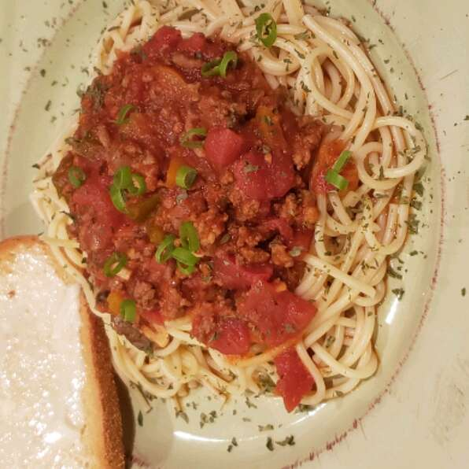

Spaghetti

This is a recipe to make one of the simplest meals for dinner: spaghetti.
Thise is the simplest recipe for making a great, filling meal. You will definitely have leftovers the day after.
Ingredients
- 1 pound ground beef
- 1 onion, chopped
- 4 cloves garlic, minced
- 1 small green bell pepper, diced
- 1 (28 ounce) can diced tomatoes
- 1 (16 ounce) can tomato sauce
- 1 (6 ounce) can tomato paste
- 2 teaspoons dried oregano
- 2 teaspoons dried basil
- 1 teaspoon salt
- ½ teaspoon black pepper
Steps
- Combine ground beef, onion, garlic, and green pepper in a large saucepan.
- Cook and stir until meat is brown and vegetables are tender. Drain grease.
- Stir diced tomatoes, tomato sauce, and tomato paste into the pan.
- Season with oregano, basil, salt, and pepper.
- Simmer spaghetti sauce for 1 hour, stirring occasionally.